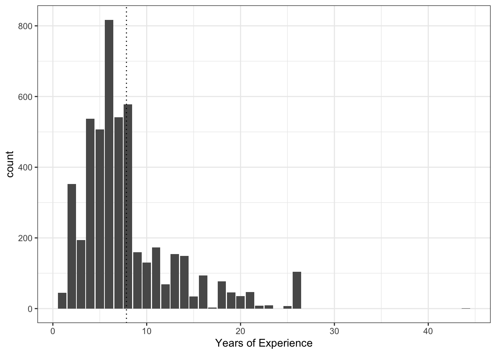

library(tidyverse)
library(tidymodels)
library(openintro)Lab 07: Logistic Regression - Answers
Getting Started
Load packages
Data
data(resume)Part 1
Exercise 1
There are 4,870 observations (rows) in the dataset and 30 dimensions (columns).
nrow(resume)[1] 4870ncol(resume)[1] 30Of these, only 392 received a callback.
resume |>
group_by(received_callback) |>
summarise(n())# A tibble: 2 × 2
received_callback `n()`
<dbl> <int>
1 0 4478
2 1 3922166 were in Boston, 2704 were in Chicago.
resume |>
group_by(job_city) |>
summarise(n())# A tibble: 2 × 2
job_city `n()`
<chr> <int>
1 Boston 2166
2 Chicago 27043504 applicants had a college degree.
resume |>
group_by(college_degree) |>
summarise(n())# A tibble: 2 × 2
college_degree `n()`
<dbl> <int>
1 0 1366
2 1 3504The mean years of experience was a little under 10 years. One applicant had over 40 years of experience, which appears to be something of an outlier.
resume |>
ggplot(aes(x = years_experience)) +
# geom_histogram(bins = 10) +
geom_bar() +
geom_vline(xintercept = mean(resume$years_experience),
linetype = "dotted") +
labs(x = "Years of Experience") +
theme_bw()
257 had honors degrees.
resume |>
group_by(honors) |>
summarise(n())# A tibble: 2 × 2
honors `n()`
<int> <int>
1 0 4613
2 1 257473 served in the military.
resume |>
group_by(military) |>
summarise(n())# A tibble: 2 × 2
military `n()`
<int> <int>
1 0 4397
2 1 4732334 had email addresses.
resume |>
group_by(has_email_address) |>
summarise(n())# A tibble: 2 × 2
has_email_address `n()`
<int> <int>
1 0 2536
2 1 2334Of these, 3746 are female, and 1124 are male.
resume |>
group_by(gender) |>
summarise(n())# A tibble: 2 × 2
gender `n()`
<chr> <int>
1 f 3746
2 m 1124It appears to be evenly split among black and white ppts (2435 each).
resume |>
group_by(race) |>
summarise(n())# A tibble: 2 × 2
race `n()`
<chr> <int>
1 black 2435
2 white 2435Note that many of these factors are supposed to be categorical, but are actually coded as numeric, so let’s recode those.
resume <- resume |>
mutate(
received_callback = as.factor(received_callback),
college_degree = as.factor(college_degree),
honors = as.factor(honors),
military = as.factor(military),
has_email_address = as.factor(has_email_address),
race = if_else(race == "black", "Black", "White")
) |>
select(received_callback, job_city, college_degree, years_experience,
honors, military, has_email_address, race, gender)Part 2
Recall that in logistic regression, we are trying to predict the probability of a binary variable.
This is modeled using generalized linear model, using a logit function to link a linear model to \(p(y)\). That is, we model a linear relationship between our predictors and the log-odds of the outcome.
Exercise 2
Here, we use logistic_reg (from tidymodels) to fit a logistic regression model with only honors as a predictor.
The resulting equation looks as follows:
\(log(\frac{p}{1-p})=-2.5 + .87X_1\)
resume_full_fit <- logistic_reg() |>
set_engine("glm") |>
fit(received_callback ~ honors,
data = resume,
family = "binomial")
resume_full_fit |>
tidy()# A tibble: 2 × 5
term estimate std.error statistic p.value
<chr> <dbl> <dbl> <dbl> <dbl>
1 (Intercept) -2.50 0.0556 -45.0 0
2 honors1 0.867 0.178 4.88 0.00000106Exercise 3
Recall that the coefficients in the linear equation reflect the relationship to the log-odds of the outcome.
Thus, \(\beta_0\) indicates the log-odds of getting a callback, given that someone doesn’t have honors. We can convert this log-odds to a probability using the logistic function:
\(p_i = \frac{exp(\beta_0)}{1 + exp(\beta_0)}\)
p = exp(-2.5) / (1 + exp(-2.5))
p[1] 0.07585818This gives us a probability of about 7.6%.
This matches the descriptive statistic, if we just calculate the proportion of people without an honors degree who got a callback:
resume |>
filter(honors == 0) |>
mutate(total = n()) |>
ungroup() |>
group_by(received_callback) |>
summarise(count = n(),
prop = count/total) |>
distinct()Warning: Returning more (or less) than 1 row per `summarise()` group was deprecated in
dplyr 1.1.0.
ℹ Please use `reframe()` instead.
ℹ When switching from `summarise()` to `reframe()`, remember that `reframe()`
always returns an ungrouped data frame and adjust accordingly.`summarise()` has grouped output by 'received_callback'. You can override using
the `.groups` argument.# A tibble: 2 × 3
# Groups: received_callback [2]
received_callback count prop
<fct> <int> <dbl>
1 0 4263 0.924
2 1 350 0.0759Exercise 4
To calculate the probability with honors, we first need to add the coefficients together:
\(log(\frac{p}{1-p})=-2.5 + .87X_1\)
log_odds = -2.5 + .87We then convert that to a probability, agian using the logistic function:
p = exp(log_odds) / (1 + exp(log_odds))
p[1] 0.1638304This gives us a probability of about 16.3% of getting a callback, given that someone has honors.
Again, this matches the descriptive statistic: \(p(callback | honors = True)\).
resume |>
filter(honors == 1) |>
mutate(total = n()) |>
ungroup() |>
group_by(received_callback) |>
summarise(count = n(),
prop = count/total) |>
distinct()Warning: Returning more (or less) than 1 row per `summarise()` group was deprecated in
dplyr 1.1.0.
ℹ Please use `reframe()` instead.
ℹ When switching from `summarise()` to `reframe()`, remember that `reframe()`
always returns an ungrouped data frame and adjust accordingly.`summarise()` has grouped output by 'received_callback'. You can override using
the `.groups` argument.# A tibble: 2 × 3
# Groups: received_callback [2]
received_callback count prop
<fct> <int> <dbl>
1 0 215 0.837
2 1 42 0.163Part 3
Exercise 5
Now we add all the variables. The equation looks like this:
\(log(\frac{p}{1-p})=-2.72 - 0.44X_1 + 0.02X_2 + 0.76X_3 - 0.34X_4 + 0.22X_5 + 0.44X_6 - 0.2X_7\)
Where:
- X1 = job_city (Chicago = 1)
- X2 = years_experience
- X_3 = honors (1 = 1)
- X_4 = military (1 = 1)
- X_5 = has_email_address (1 = 1)
- X_6 = race (White = 1)
- X_7 = gender (m = 1)
m_multiple <- logistic_reg() |>
set_engine("glm") |>
fit(received_callback ~ job_city + years_experience + honors + military + has_email_address + race + gender,
data = resume,
family = "binomial")
m_multiple |>
tidy()# A tibble: 8 × 5
term estimate std.error statistic p.value
<chr> <dbl> <dbl> <dbl> <dbl>
1 (Intercept) -2.72 0.155 -17.5 1.15e-68
2 job_cityChicago -0.436 0.114 -3.83 1.30e- 4
3 years_experience 0.0206 0.0102 2.02 4.30e- 2
4 honors1 0.763 0.185 4.12 3.77e- 5
5 military1 -0.344 0.216 -1.60 1.11e- 1
6 has_email_address1 0.222 0.113 1.97 4.94e- 2
7 raceWhite 0.443 0.108 4.10 4.13e- 5
8 genderm -0.196 0.135 -1.45 1.47e- 1Exercise 6
The equation lists a positive coefficient for race, for which White is coded as 1.
This positive coefficient reflects a positive gain in callback rate for resumes where the candidate’s first name implied they were White.
The model results suggest that prospective employers favor resumes where the first name is typically interpreted to be White.
Exercise 7
First, let’s calculate the AIC for the full model. It’s 2675.5.
m_multiple |>
glance() |>
pull(AIC)[1] 2675.548Now, we successively eliminate different variables from the model, and see whether removing any of these models improves the model fit.
According to this analysis, removing gender from the model doesn’t really affect AIC (it only changes it by about 0.2). Removing military only changes AIC by 0.7, and removing years_experience affects it by about 1.5.
For the purposes of this exercise, I removed gender and called the resulting model m_resume.
m_resume <- logistic_reg() |>
set_engine("glm") |>
fit(received_callback ~
job_city +
years_experience +
honors +
military +
has_email_address +
race,
# gender,
data = resume,
family = "binomial")
m_resume |>
glance() |>
pull(AIC)[1] 2675.702## Just for comparison
logistic_reg() |>
set_engine("glm") |>
fit(received_callback ~
job_city +
# years_experience +
honors +
military +
has_email_address +
race +
gender,
data = resume,
family = "binomial") |>
glance() |>
pull(AIC)[1] 2677.496Exercise 8
We can plug each of those variables into the original equation from m_multiple:
\(log(\frac{p}{1-p})=-2.72 - 0.44X_1 + 0.02X_2 + 0.76X_3 - 0.34X_4 + 0.22X_5 + 0.44X_6 - 0.2X_7\)
Where:
- X1 = job_city (Chicago = 1)
- X2 = years_experience
- X_3 = honors (1 = 1)
- X_4 = military (1 = 1)
- X_5 = has_email_address (1 = 1)
- X_6 = race (White = 1)
- X_7 = gender (m = 1)
This applicant has about an 8.2% chance of getting called back.
log_pred = -2.72 - #intercept
0.44 + # Lives in chicago
.02*14 + # 14 years of experience
0.76*0 - # No honors, so set this to zero
0.34 * 0 + # No military, so set this to zero
0.22 * 1 + # Has an email address
0.44 * 1 - # First name implies white
0.2 * 1 # First name implies male
p = exp(log_pred) / (1 + exp(log_pred))
p[1] 0.08166026In contrast, an applicant with exactly the same experience but with a first name implying they are a Black male would have only a 5.4% chance of getting called back—providing evidence of discrimination in hiring.
log_pred = -2.72 - #intercept
0.44 + # Lives in chicago
.02*14 + # 14 years of experience
0.76*0 - # No honors, so set this to zero
0.34 * 0 + # No military, so set this to zero
0.22 * 1 + # Has an email address
0.44 * 0 - # First name implies Black
0.2 * 1 # First name implies male
p = exp(log_pred) / (1 + exp(log_pred))
p[1] 0.0541667